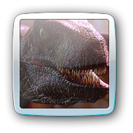
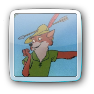

| What is this place? | |
| Everywhere and nowhere. A place betwixt time, born of hopes and dreams, sustained by the human spirit. | |
| I don’t understand. | |
| That is fine. In time, you will come to learn that the finer details are not always so important. | |
| Well, what is important? | |
| I am not at liberty to say. You must look within yourself for that answer. | |
| How am I supposed to do that? | |
| Tell me, who are you? | |
| Um, I don’t know… | |
| Who are you? | |
| I’m not sure! | |
| Who do you want to be? | |
| Who can I be? | |
| In this place, you can be anything. Anything you can dream up, it can be reality. | |
| Can I be a boy? | |
| Of course. | |
| Can I be a girl? | |
| Certainly, if that is what you wish. | |
| Actually, I think I want to be something else. Something not human. | |
| All things are possible here. State your wish and make it so. | |
|
 |
I’m… a velociraptor! |
| And how mighty you are. | |
|
 | Wait, no. I’m a fox! |
| With a gorgeous coat of fur, I should add. | |
| Okay. I dunno if this is who I am, but I think I’m okay with this for now. | |
| You can always change your mind later. | |
| Yeah. | |
| ... | |
| ... | |
| ... | |
| So… I still dunno know where I am. | |
| Would you like me to explain in more certain terms? | |
| Yes, please. | |
| This great expanse stretched out before you is called cyberspace. It is a place of endless curiosities, limited only by its inhabitants’ imaginations. Here, the line between dream and reality is blurred. Everything you see here is replete with meaning, yet is inherently meaningless. It is a liminal and transitory space. Some spend their entire lives here. Others just pass through. Some are active participants. Others are mere observers. Some come here to find themselves. Others come to be someone else. There is no correct way to be here. | |
| Cyberspace, huh? | |
| Yes. | |
| I’ve heard of that. It’s not real, right? | |
| That is for you to decide. | |
| Well, it’s all 1’s and 0’s, right? Whatever that means. | |
| In a technical sense. Everything you see here was constructed in HTML and CSS, which your browser combed through and rendered what you see before you. | |
| HTML…? CSS...? | |
| Pay them no mind. They are not important. | |
| Aha! So you can give definitive answers! | |
| Are you really interested in the technicalities of our existence? | |
| Erm… I guess not. I still dunno who I am. | |
| Then those things are not important. | |
| Alright. Still, cyberspace isn’t real, right? Maybe it’s all 1’s and 0’s or maybe it’s all HMTL or CCS or whatever, but it’s not like, real, y’know? And if cyberspace isn’t real, then neither are you. Neither am I! | |
| Are we not currently speaking to one another? | |
| Well, yeah. | |
| Then does it matter? | |
| Hmm. I guess not. | |
| ... | |
| ... | |
| ... | |
| I just want to know if I’m real or not. | |
| You are real enough. | |
| Okay. | |
| ... | |
| ... | |
| ... | |
| Ugh. All this makes my head hurt. | |
| Rest. We have no shortage of time here. | |
| Okay. | |
| ... | |
| ... | |
| ... | |
| ... | |
| ... | |
| Zzz... | |
| ... | |
| Zzzzzz... | |
| ... | |
| Zzzzzz... *snore* Zzzzzz... | |
| ... | |
| Zzzzzz... *yawn* | |
| ... | |
| Hey, I don’t want to be a fox anymore. I think I want to be something kinda vague, like a cloud or something. | |
| Perhaps “amorphous” is the word you are looking for. | |
| Um, I dunno what that means, but maybe. | |
| The depths of your grandeur know no bounds. | |
| Y’know, I dunno what half the words you say mean, but you’re awful nice, I think. | |
| I simply state things as they present themselves to me. | |
| Yeah. Hold on, we’ve been talking for so long now and I don’t even know your name! | |
| I have no name. | |
| Everyone has a name! | |
| Do you have a name? | |
| Actually, now that you mention it, I can’t remember… | |
| Then your statement is false. Not everyone has a name. | |
| Well, are we “everyone”? | |
| Touché. I do not know. | |
| Ha, I’m catching on! God, this is all so confusing, though. | |
| Would you like to give me a name? | |
| Yeah! But, I dunno anything about you, really. What even are you? | |
| What am I? I am not sure. | |
| Well, here you can be anything- | |
| No, that is not what I mean. | |
| What do you mean? | |
| It is not for me to decide who or what I am. | |
| Who can decide, then? | |
| You. | |
| Me? Why me? | |
| Have you been listening? You dictate the reality here. You are judge. You are jury. You are executioner. You are God. You wanted to be a boy and you were. You wanted to be a girl and you were. You wanted to be a velociraptor, then a fox, and then something amorphous and you were. Can you not see? This place called cyberspace—it is yours. Everything before you is of your own creation. I am you. You are me. You are the stars in the background and the empty space surrounding them. You are the words floating in space. You are the code that makes this possible. You are anything and everything and nothing all at once. | |
| Wow. I’m still not sure I understand, but that was beautiful. | |
| You understand enough. You have the answers you seek, even if they are not yet known to you. | |
| This is a lot to take in. | |
| Indeed. | |
| ... | |
| ... | |
| ... | |
| ... | |
| ... | |
| ... | |
| ... | |
| ... | |
| ... | |
| ... | |
| Hey, are you still there? | |
| I am. | |
| I think I know who I am. | |
| Who are you? | |
| Okay, well, I'm actually not totally sure yet, but I think I’m… something like this. | |
| Your beauty is beyond words. | |
| I’m starting to remember why I came here and made this place. | |
| Oh? | |
| Everything feels like it’s gotten so out of control lately. I can’t keep up. I’ve got all these things in my life, all these responsibilities, and I feel like I’m barely holding on. I don’t think anyone can tell I’m slipping. Not yet, anyway. | |
| I guess it’s not that I can’t keep up, but I just don’t have the motivation to keep going, y’know? It’s like nothing excites me anymore. I worked so hard to get to where I am, but when I finally got there I realized I didn’t care about any of it. It’s all meaningless. Vain. Like, is this the kind of person I am? Someone defined by their work? Not even really a person, just a list of checkboxes? How many lifetimes have I lost in my pursuit of validity? | |
| You are valid regardless. | |
| Yeah, whatever. You’re just supposed to say that. Just like everyone says stuff like, “this is a safe space” or whatever, but really it’s just words. It doesn’t mean anything. None of this means anything! | |
| It does if you assign it meaning. | |
| Y’know, what’s your deal, anyway? You act all wise like some self-help guru, like you’ve got all the answers, but you don’t! I mean, this place is just as meaningless as my life out there! | |
| You created this place. If it is meaningless, it is because you made it so. | |
| I dunno, I just feel like I’m not enough and- | |
| You are enough. | |
| That’s nice, but you can’t just say that and suddenly it's true. It’s not that easy. | |
| Yes, I can. Here, you are enough. | |
| Hmm. Anyways, that’s why I came here. To get away from it all for a bit. Figured I’d float aimlessly in the void for a little while until I figure myself out. | |
| Is it working? | |
| I dunno. How can I tell? | |
| I cannot say. I have never been a person or existed outside of this space. You created me, too. Remember? | |
| Yeah, I remember now. | |
| I know I can’t stay here forever, but can we just wait here for a while? | |
| I would like nothing more. | |
| ... | |
| ... | |
| ... | |
| ... | |
| ... | |
| ... | |
| ... | |
| ... | |
| ... | |
| ... | |
| ... | |
| ... | |
| ... | |
| ... | |
| ... | |
| ... | |
| Alright. Let’s go. |